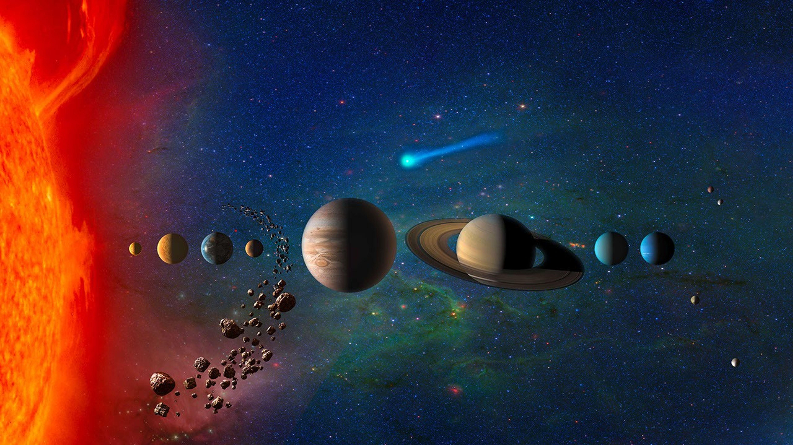

Welcome to Space Explorer
Space Explorer is your gateway to the infinite expanse beyond Earth's atmosphere. Whether you are a curious beginner or a passionate astronomy enthusiast, this site brings you stunning facts, in-depth mission histories, and vivid imagery of the cosmos. The universe is roughly 13.8 billion years old, and humanity has only begun to scratch the surface of its mysteries.
From the rocky inner planets of our Solar System to the supermassive black holes
lurking at the centres of galaxies, every corner of space holds something
astonishing. Join us as we explore the science, the history,
and the awe-inspiring beauty of the universe around us.
This site contains nine chapters of discovery choose any topic from the
navigation menu above, or click Begin Journey to start from the Solar System.
Explore Topics
Nine Chapters of Cosmic Discovery
Solar System
Our cosmic neighbourhood eight planets, dwarf planets, moons, asteroids, and comets all orbiting a middle-aged yellow dwarf star we call the Sun.
Explore →
Black Holes
The most extreme objects in the universe regions of spacetime where gravity is so intense that nothing, not even light, can escape their pull.
Explore →
Space Missions
Humanity’s greatest adventures: from Apollo Moon landings to robotic rovers on Mars and the Voyager probes still travelling through interstellar space.
Explore →
Galaxies
Vast island universes containing billions of stars, gas clouds, and dark matter. Our own Milky Way is just one of an estimated two trillion galaxies in the observable universe.
Explore →
Telescopes
From Galileo’s first refractor to the James Webb Space Telescope, discover the instruments that have revolutionised our understanding of the cosmos.
Explore →
Astronauts
Meet the brave men and women who have ventured into the void of space, pioneering human spaceflight and conducting science in orbit.
Explore →
Nebulae
Stunning clouds of gas and dust where stars are born and die from glowing emission nebulae to the ghostly shells of planetary nebulae left behind by dying Sun-like stars.
Explore →
Contact Us
Have questions, feedback, or ideas about space? We’d love to hear from you. Fill out our feedback form and help shape the future of this site.
Get In Touch →
Citations
All sources of information and images used throughout this website are credited here, ensuring transparency and proper attribution to their original creators.
View Sources →

Our Solar System: Mercury, Venus, Earth, Mars, Jupiter, Saturn, Uranus, Neptune